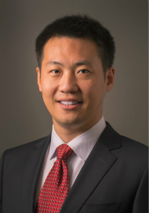

CSE 60556: Large Language Models
Description
This graduate-level elective course introduces the foundations and practice of large language models through hands-on study of influential open-source projects. It is designed for graduate students with prior knowledge of deep learning and programming experience who are interested in using, adapting, and developing LLM techniques. The course is organized around open-source projects, with each project-based chapter introducing several important LLM concepts, methods, and system-building practices. Through these projects, students will study topics such as transformers, tokenization, prompting, retrieval-augmented generation, fine-tuning, tool use, agents, quantization, efficient inference, multimodal models, and LLM evaluation. By the end of the course, students will be able to understand key LLM concepts, work with modern open-source LLM tools, evaluate LLM-based systems, and build practical LLM applications or research prototypes.
Instructor
|
 |
Prerequisites
Received credits with graduate student status from at least one course below: CSE 60625 Machine Learning, CSE 60647 Data Science, CSE 60657 Natural Language Processing, CSE 60868 Neural Networks; or highly-related graduate-level courses at another accredited university.
Course Topics
Chapter 1: Hugging Face
- Introduction to Hugging Face
- Masked Language Models and Causal Language Models
- Transformers, BERT, and Early GPT Models
- Scaling Laws and In-Context Learning
- Mixture-of-Experts Models, Sequence-to-Sequence Language Models, and Instruction Tuning
Chapter 2: DSPy
- Introduction to DSPy
- NLP Tasks and DSPy Signatures
- Reasoning with Chain-of-Thought and Self-Correction
- Retrieval and Retrieval-Based Language Models
- Retrieval-Augmented Generation and Generative Retrieval
- Tool-Use Language Models
- RLHF, PPO, DPO, and GRPO
- RLVR, Preference Optimization, and Scaling Reinforcement Learning
- Prompt Optimization versus Reinforcement Learning
Chapter 3: OpenClaw
- Agent Frameworks and Evaluation
- Multi-Agent Systems and OpenClaw
Chapter 4: Ollama
- Thinking Language Models
- Structured Outputs, Vision-Language Models, and Embeddings
Chapter 5: Hugging Face II
- KV Cache, PEFT, and LoRA
- Distillation and Quantization
Chapter 6: New Waves
- Skill-Based Language Model Systems
- Agent Workflows with Dify
- OpenEvolve
- vLLM and SGLang
Chapter 7: Applications
- Hallucination, Personalization, and Long-Context Language Models
- Robotics and Safety
- Education, Simulation, and Healthcare